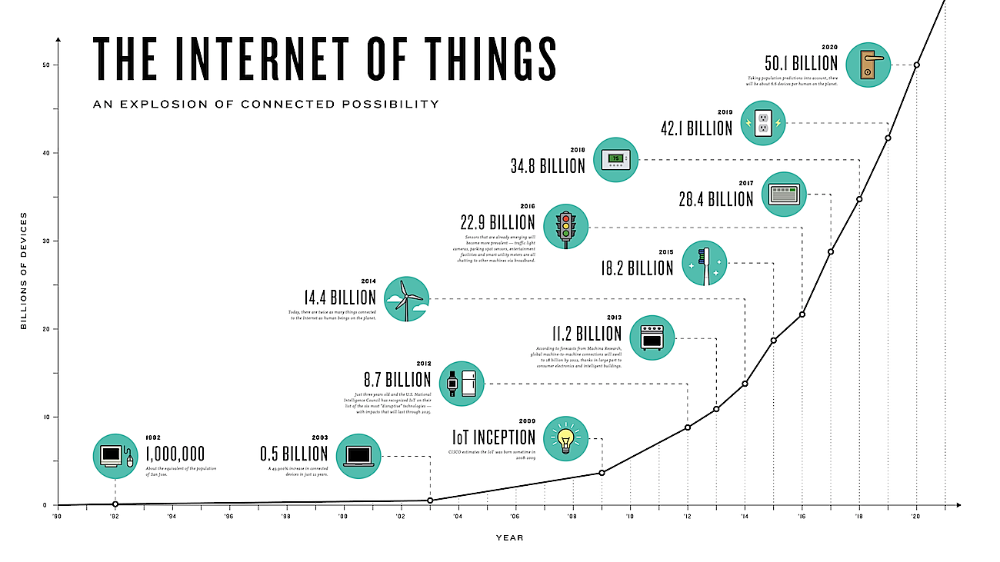

The Futuristic Tech
 To take technology to new heights and do what the human kind has never been able to do before.
The promise of IoT is "smart" everything. Nest's Internet-connected Learning thermostat, Nest Cam surveillance camera, and Protect networked smoke alarm promise a more energy-efficient, safer home. IoT technology is a key part of the pitch for "smart cities," "smart buildings," "smart factories," and just about every other "smart" proposal from sensor manufacturers, networking companies, and big technology consultancies. Seemingly everyone is looking for a piece of the biggest potential collection of integration projects ever. Sometimes the "smart" is relatively close to the sensor itself, but it often relies on a remote cloud service or data center to process the information and control actions.
On the consumer side, while devices like Nest's get much of the attention, wearable IoT devices are just starting to take off—despite the relatively low impact so far of high-profile efforts like the Apple Watch. "The Apple Watch may be on a slower liftoff cycle than other recent Apple hardware launches, but it has a complex number of use cases which are finding their home, purpose, and meaning," said Mark Curtis, the chief client officer at Fjord, Accenture's design consultancy. Within the next two to three years, he predicted, wrist-based devices will lose the need to be tethered to a smartphone. "At the same time, interactions between wearables and nearables (e.g., beacons, Amazon Echo, connected cars) will grow."
The health field is the most immediate fit for wearables, because they can gather data that has a benefit without conscious human action. "A good example is our Fjord Fido diabetes platform," Curtis said. "It requires complex linking between devices and data but would not have been possible without a smartwatch."
Governments are especially interested in the analytical powers of IoT-collected data for all sorts of reasons, from tuning services at the most basic levels to understanding how to respond in an emergency—as well as collecting revenue. Traffic lights and even pedestrian crossing buttons could be used as networked sensors, said Michael Daly, chief technology officer for Raytheon Cybersecurity and Special Missions. "You could see how many times is this being used and how long people are waiting to cross, then adjust traffic flow accordingly," he said.
Industry is equally interested in the data that can be tapped into by IoT, and more companies are examining the benefits of using the embedded intelligence and network connectivity of IoT devices to improve their own systems and products. In most of these applications, National Instruments Executive Vice President Eric Starkloff told Ars, companies are most interested in instrumenting their operations, "looking for events that are a warning of impending failure" in systems or squeezing additional efficiency out of their operations. So far, only a small fraction of industrial systems have network-based telemetry gathering, and Starkloff said that the greatest opportunities for growth over the next five years are in "brown field" applications. These are instances of simply upgrading or enhancing existing hardware in factories, refineries, office buildings and other physical plants with IoT goodness.
Manufacturing companies have been among the earliest adopters of IoT. General Electric has pushed forward its own massive internal investment in IoT technology to collect analytic data from everything from gas turbine engines to locomotives. IoT is also part of the "factory of the future" concept embraced by aircraft manufacturer Airbus, where National Instruments is helping the company put "smart IoT technologies into their smart tooling and robotics systems that work alongside human operators," according to Starkloff.
Airbus' IoT interest is as much about ensuring the precision of the company's manufacturing as it is about sensing potential problems. "Today they put planes together mostly manually," Starkloff said. "They want to move to the point where tools are intelligent—where a tool knows whether a rivet was put in correctly." To do that, the analytics tracking system performance "has to be close, not up in cloud," he explained. "They need devices communicating locally—smart tooling connected to smart wearables, such as glasses with a heads-up display."
In a way, Airbus' vision mirrors one that Boeing attempted in the 1990s with augmented reality (one the company has continued to invest in ever since). It's also similar to some of the methods of tying IoT technology to augmented reality visualization we saw at GE Software earlier this year, where technicians could be directed to equipment needing service in a manufacturing environment and stepped through the process with visual cues. But Airbus' setup also includes using IoT technology to communicate between human operated tools and robotic systems, passing data over a local network to allow machines and humans to work collaboratively.
The Department of Defense has similar designs on IoT, though the systems that the DOD wants to enhance are often soldiers themselves. Embedded and wearable systems are turning soldiers into nodes on the DOD network, both to enhance their battlefield performance and to track their well-being. Aside from the work on autonomous drones and other sensors, the Army has developed networked helmet sensors that can help detect the severity of concussive blows (a bit of tech that the NFL has moved to adopt as well). The military, through a number of DARPA projects and other labs, continues to develop wearable technologies that will allow soldiers to interact with other systems.
At a recent conference sponsored by the Army's Training and Doctrine Command (TRADOC), scientists discussed the possibility of "implanted" sensors that could communicate what a soldier was doing without the soldier having to consciously communicate it. Thomas F. Greco, director of intelligence at TRADOC, said that IoT technology coupled with wearable sensors could result in a "precision of knowing," reducing ambiguity on the battlefield and allowing commanders to have absolute knowledge of what troops were doing. But he also said that having that kind of data could affect the order and discipline of soldiers. "Ambiguity is a kind of lubricant in personal relationships," he said, wondering how that would change "when you have total knowledge and accountability."
Some of those issues can be addressed through design. Curtis identified Apple as doing a good job of protecting privacy in two design choices: by using the pulse sensor to detect when the watch has been taken off (and requiring a passcode to unlock it) and by having the display turn off when the watch is facing away from the owner.
"All of these devices, they're not just independent widgets," said Raytheon's Daly. "They're all collecting lots and lots of data on what we're doing." Even if the data is on something seemingly benign, like data from a fitness and health monitoring device, there's potential for its misuse. The same data that measures how many steps you've taken each day and how far you've gone could be used to track your activity for divining knowledge about "who you are, where you go, and how you move," Daly noted.
In some cases, that could be a good thing: data from a health tracker could, for example, theoretically let responders to an earthquake know that someone is alive and moving under a collapsed building. But collected over time, the data poses a significant privacy risk. "Personal information could leak, which may not be a concern if it’s just the number of steps walked but could be embarrassing or compromising if it’s personal medical data," Curtis said. And third parties could inadvertently expose that kind of data if there aren't proper controls. "Many people will have no issue with their health data being shared with a doctor," Curtis explained. "But the same people may hesitate before sharing data with an insurance company."
Daly added that the vast amount of data transmitted by IoT devices and stored locally raises the question of how long data collected from their users "should be allowed to live in the world, and how you get rid of it" when that appropriate life is over.
Part of the problem could be addressed by reducing what gets collected in the first place. While not all IoT devices can be equipped like the ones Airbus is installing in its factory, the systems that collect the data could perform pre-processing to gather only the analytically valuable data for storage.
Speed the plow
Reducing the data flow might not seem like a major issue for the industrial flavor of IoT since it doesn't touch the broader Internet much. It's more an "Internet of things" in lower case, connecting factory local networks and other industrial systems together over private wide-area networks. That's in part because of security and in part because of the reliability requirements for industrial applications.
"The bar for [Internet] reliability is going to have to go up for industrial IoT," said Kris Alexander, chief strategist at Akamai. "It just has to work. I'm going to have four hours of downtime a year? That won’t cut it." But if companies are going to start including IoT technology in products at any scale, the Internet will have to play a role in order for it to be affordable.
This need for low latency and high speed within the industrial IoT space is driving the adoption of new networking standards. These systems, based existing Ethernet and IP-based networking technology, may soon find their way far beyond the factory floor. Time Sensitive Networking (TSN), a time synchronized networking standard overseen by the Institute of Electrical and Electronics Engineers (IEEE) and the AVnu Alliance, can easily accommodate many IoT applications as we saw in lab tests at GE. In addition to IoT applications in industry, TSN is being looked at for use in automobiles. "There's a strong desire for TSN to be used in the automotive space because companies want to use IP-based controls for automobiles," said Starkloff.
But even in the somewhat friendly confines of the "industrial Internet," bandwidth isn't free. Collecting telemetry data from IoT devices for deep analytics at any sort of scale requires doing a lot of processing at the edge to cut down information to a more manageable and usable form, according to Starkloff. When that telemetry is coming from millions of consumer-grade devices over the Internet, the need to cut down on what is collected becomes just as much about maintaining reliability as protecting privacy.
One route might be a sort of reverse content delivery network, where a provider performs a forward-positioned processing of data with a MapReduce function or other big data processing scheme before passing the data back to the analytics system behind the IoT application. That's something Akamai already does internally, and the company is examining how to turn it into a service for IoT applications. "Today we have REST APIs, which we use to retrieve data for business units," said Alexander. The distributed data collection network at Akamai currently collects 1.2 exabytes of data per year. "We're exploring ways we could have third parties use the system to pull in data," he said.
If data is only being collected for a few thousand devices, Alexander explained, "you'd probably be better off with your own service and Amazon Web Services," but a service like the one Akamai currently uses internally could support data feeds from hundreds of thousands devices. "We're already talking to automotive companies interested in using our network to collect data," he noted.
The same goes the other way: how do you get software updates out to millions of embedded devices on the Internet? Akamai has already done this in the automobile industry, distributing software updates to 40 million vehicles last year, according to Alexander.
There are other emerging technologies that could make IoT connections more reliable, especially for mobile devices. The coming 5G cellular broadband standard is seeking to reduce latency across mobile networks to below a millisecond. The ultimate IoT devices, autonomous vehicles, absolutely need low-latency, reliable data networks in order to operate reliably.
No matter what G the wireless broadband network that connects IoT devices is, it's still an IP-based network. And as security researchers demonstrated when they were able to use Sprint's wireless network to gain access to a Jeep Cherokee's "connected car" systems and then its control network, being on mobile networks doesn't erase the biggest fear concerning IoT: security. It may be the most persistent problem that IoT faces because of the potential effect that an attack on IoT systems could have in the physical world.